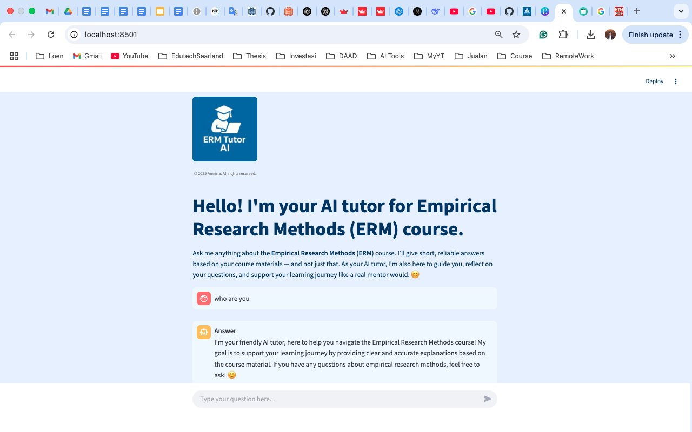
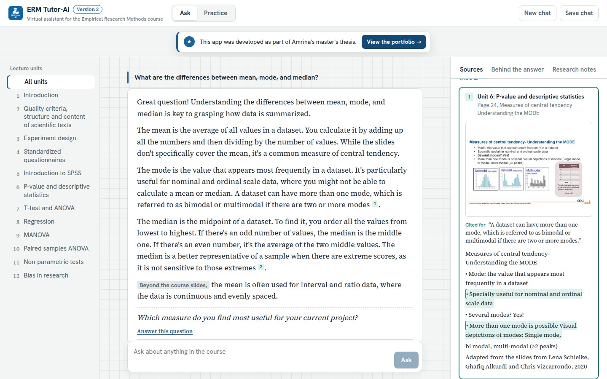
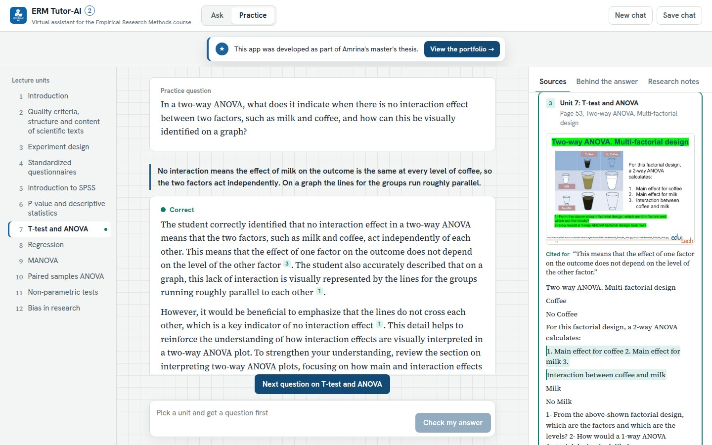
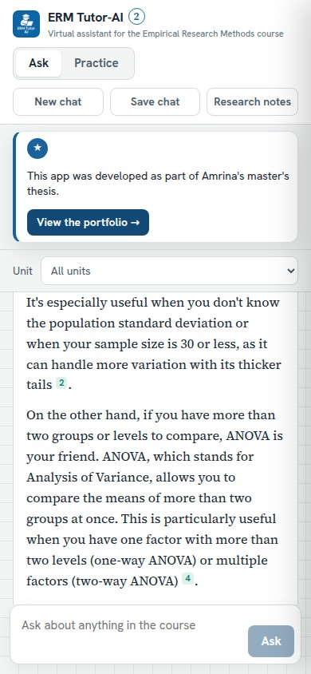

What changed from version 1
Same lecture materials, same model (GPT-4o) and the same tutor rules as the thesis app. Two next steps from the thesis shaped this version: citations at passage level and feedback on the student's own answers.
| Version 1 (thesis) | Version 2 | |
|---|---|---|
| Sources | Name of one source file under the answer | A numbered citation after each statement; each opens the lecture passage with unit, page and slide title |
| Where an answer comes from | Label “course materials” or “general knowledge” | The same labels, now based on whether the answer cites a passage, plus a strip of twelve ticks for the units it used |
| Course focus | All units | All units, or one chosen unit |
| Practice | None | The tutor writes a question from a lecture slide, the student answers, the feedback gives a verdict and cites the slides to review |
| Follow-up question | Inside the answer text | Shown separately with a button to answer it; the last two turns go along so the tutor can follow |
| Research notes | PDF “About this app” | Side panel with the evaluation design, a ratings chart, answer length and limits |
| Also | Streamlit chat | Streaming answers, save the chat as Markdown, light and dark mode, phone layout |

Version 1, the thesis app
The tutor as it was built and evaluated in the master's thesis: a Streamlit chat with LangChain and ChromaDB, designed in four interface iterations. It is still online.
The interface
Screenshots of the live app with real model answers.



How it works
Retrieval-augmented generation: find the relevant lecture passages first, then let the model answer from them and cite them.
- Index the courseThe 12 lecture PDFs are read page by page and split into 354 chunks of up to 1,500 characters. Each chunk keeps its unit, page and slide title.
- RetrieveThe question is embedded with OpenAI text-embedding-3-small; the 4 most relevant and varied passages are chosen from 10 candidates (maximal marginal relevance), optionally within one unit.
- Answer and citeGPT-4o (temperature 0) gets the numbered passages and the version 1 tutor prompt: course materials first, general methods knowledge second, a polite refusal for unrelated questions. It cites passages as [1], [2].
- Show the evidenceThe answer streams to the browser; each number opens its passage in the source panel.
| Layer | Version 1 | Version 2 |
|---|---|---|
| Interface | Streamlit | React, TypeScript |
| API | – | FastAPI, server-sent events |
| Model | GPT-4o | GPT-4o |
| Retrieval | LangChain, ChromaDB | NumPy (cosine, MMR) |
| PDF parsing | Markitdown | pdfminer.six, per page |
| Delivery | Streamlit Cloud | pytest, GitHub Actions, Docker, Render |
Version 2 calls the OpenAI API directly because streaming and numbered citations need control over the prompt and the passages. Without an API key it runs in a demo mode with keyword search over the same passages.
What the thesis found
The evaluation is about version 1. Two course instructors rated the answers of ERM Tutor-AI and of ChatGPT-4o (without the course materials) to 20 questions from the weekly assignments, on a 7-point rubric adapted from Lee (2024). Version 2 has not been evaluated yet.
Instructors rated ERM Tutor-AI 6.33 on average, against 6.00 for ChatGPT-4o (two-way ANOVA, p = .038). Its answers were shorter: 198 against 280 words on average.
The two instructors disagreed on which system was better: one rated every tutor answer 7, the other preferred ChatGPT-4o. The quality result is therefore preliminary.
Figures re-computed from the raw ratings after the thesis was submitted; they replace the summary table in the thesis (6.75 vs 6.00).
Limits and next steps
- 20 questions and two raters, who were not blind to the system.
- No students took part, so the study measured answer quality, not learning.
- Version 2's citations and practice feedback have not been evaluated. A study with students could compare both versions: do page-level citations change how often students check an answer and how much they trust it?
Scale 1 to 7; the axis starts at 4. Full thesis: doi.org/10.5281/zenodo.23749487